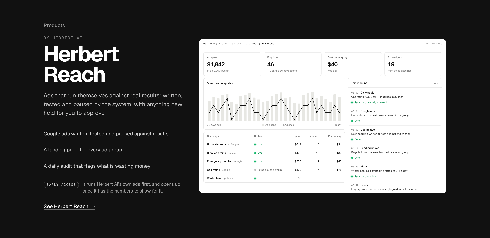
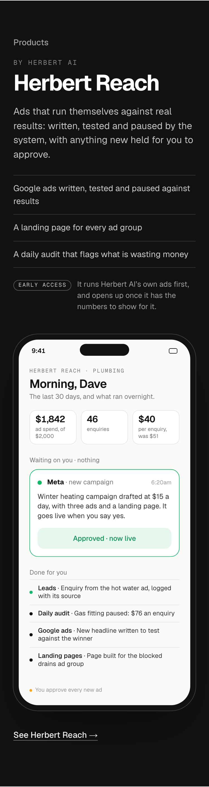
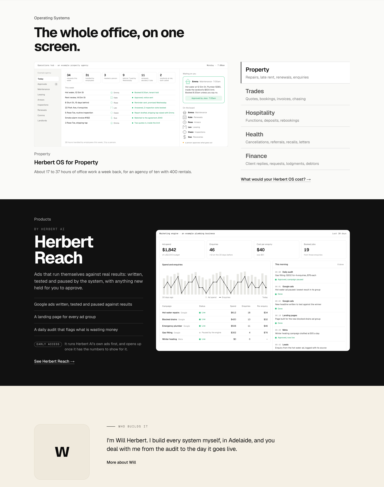

Homepage section 5 as built from your pick: its own dark band, “by Herbert AI” over “Herbert Reach”, early access while it runs Herbert AI’s own ads. On a laptop the marketing dashboard plays once in view; on a phone the band shows Herbert Reach as the owner would run it from their phone (the month’s numbers, the one campaign waiting on them, what the engine did), the same rule as Herbert OS. Then the band in the page: Operating Systems above, the founder note below.


